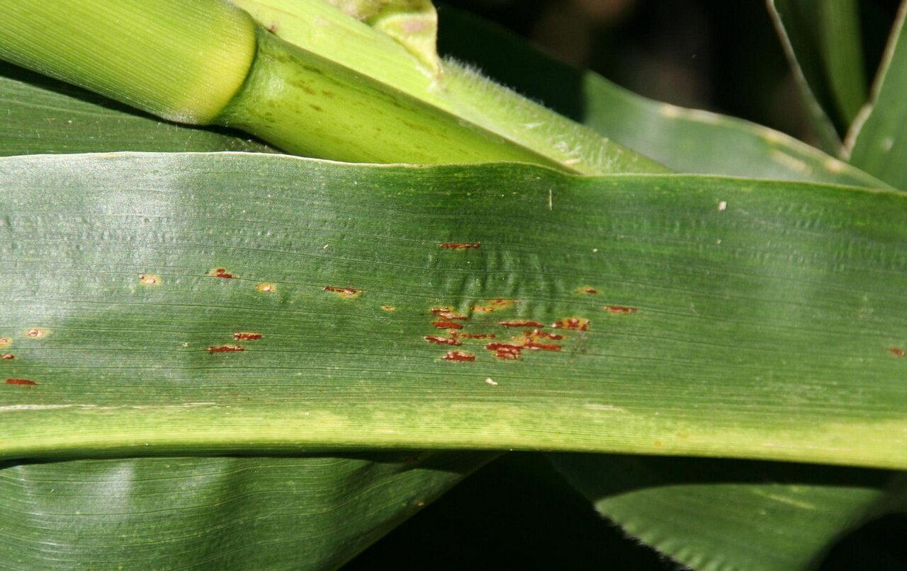
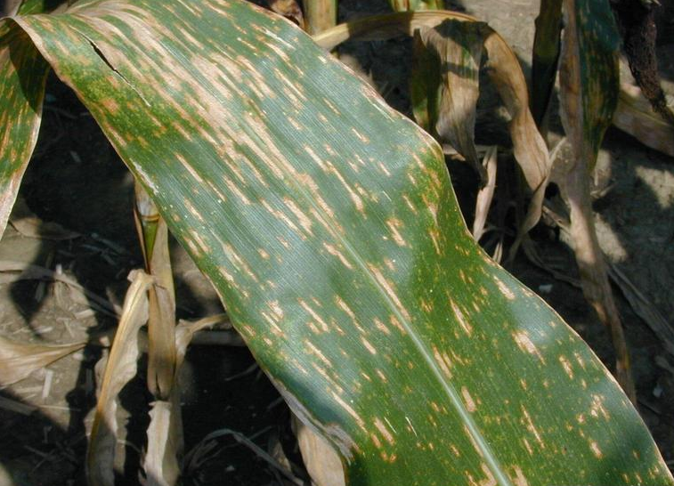
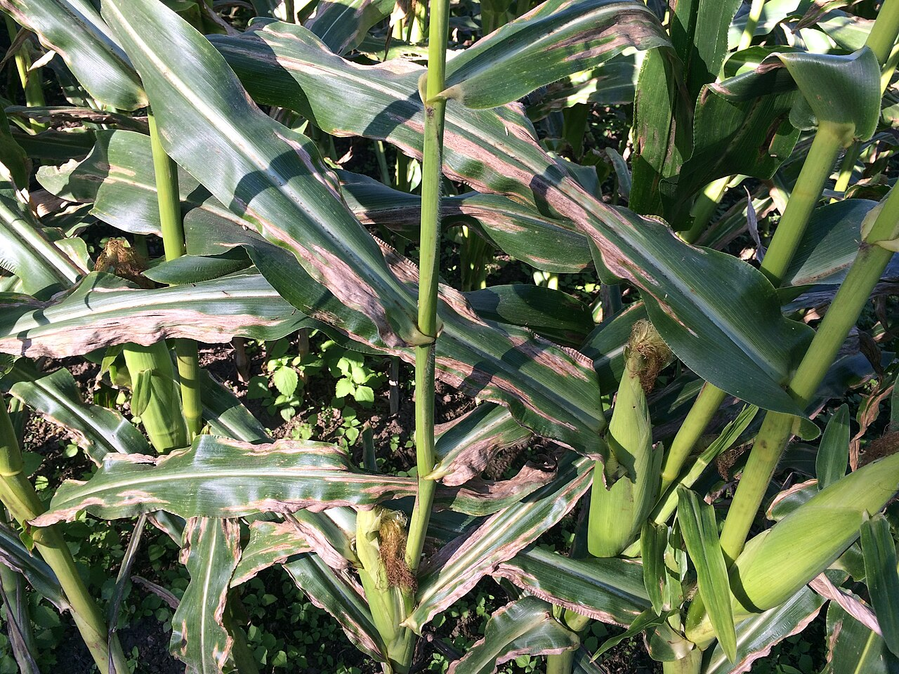
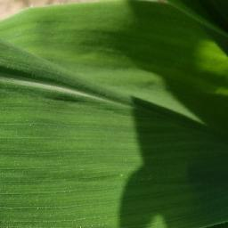

01 · FUNGAL
Common rust
Puccinia sorghi

Photo example Daren Mueller, Iowa State University · CC BY 3.0 US
What to look for
Raised, cinnamon-brown to dark-brown pustules scattered on both sides of the leaf. The powdery spores may rub off.
Favorable conditions
Cool, wet weather, heavy dew, and long periods of high humidity. Hot conditions can slow development.
Practical first steps
Compare both leaf surfaces. Check the hybrid’s resistance rating. Scout new growth and track whether symptoms are spreading. Ask a local crop adviser whether treatment is economically warranted. University of Minnesota Extension source →
02 · FUNGAL
Gray leaf spot
Cercospora zeae-maydis

Photo example Daren Mueller, Iowa State University · CC BY 3.0 US
What to look for
Gray-to-brown rectangular lesions with straight, parallel sides. Mature lesions are usually restricted by the leaf veins.
Favorable conditions
Warm temperatures with extended high humidity or leaf wetness. Risk increases where infected corn residue remains.
Practical first steps
Inspect lower leaves first. Use resistant or tolerant hybrids. Consider crop rotation and residue management for future seasons. Base any fungicide decision on disease pressure, crop stage, weather, and local guidance. University of Minnesota Extension source →
03 · FUNGAL
Northern leaf blight
Exserohilum turcicum

Photo example Chroanch · CC BY-SA 4.0
What to look for
Long, tan, canoe- or cigar-shaped lesions with smooth rounded ends. Lesions often begin on lower leaves and move upward.
Favorable conditions
Moderate temperatures and prolonged moisture. Earlier infection can be more damaging on susceptible hybrids.
Practical first steps
Check several plants across the field. Review the hybrid’s disease rating. Use rotation and residue management where appropriate. Confirm before applying a fungicide; timing and crop stage matter. University of Minnesota Extension source →
04 · NO STRONG MATCH
Healthy-looking leaf
Monitor rather than assume

Photo example eligapris maize model repository · MIT
What to look for
Even green tissue without spreading lesions, powdery pustules, major chlorosis, or dead areas. Normal leaves can still show minor physical damage.
Keep monitoring
A “healthy” model result only means the photo did not strongly resemble the three supported diseases. Nutrient problems, insects, other diseases, and very early symptoms are outside this detector’s scope.
Practical first steps
Recheck the same plants after several days. Photograph both sides of suspicious leaves. Seek local advice if symptoms spread, affect yield-critical leaves, or remain unclear.